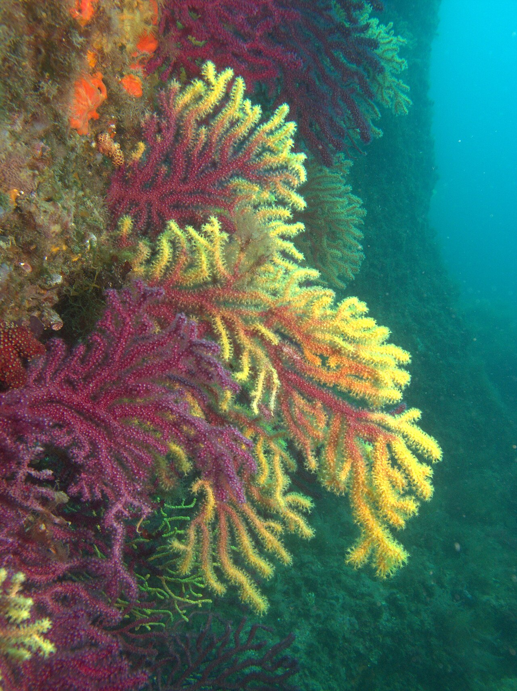
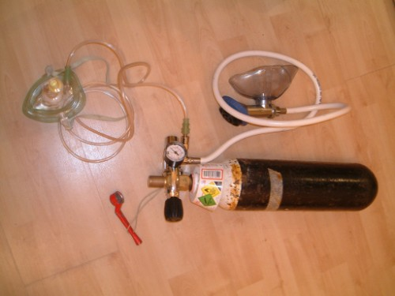
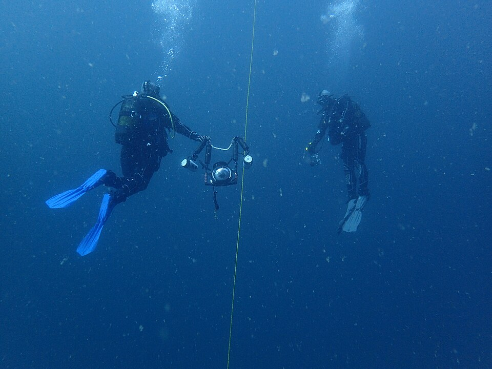
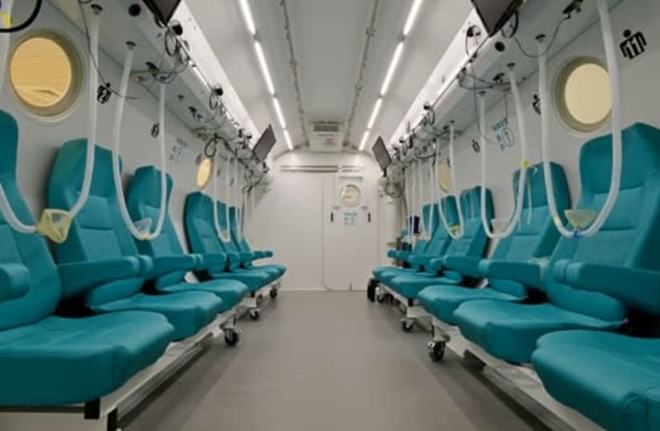

Foto: Jouni Kuisma, DiveCodex · CC BY-SA 4.0 · Illes MedesAccidentes de buceo y cómo actuar
Muchos buceadores no saben reconocer una enfermedad descompresiva o una embolia gaseosa, y pierden un tiempo valioso pensando que «ya se pasará». Saber qué son, cómo se manifiestan y qué hacer es la mejor forma de evitarlas y de reducir sus secuelas.
Este contenido resume lo que se enseña en los cursos de buceo y de primeros auxilios, así como las recomendaciones de DAN y del Consejo Europeo de Resucitación. No sustituye un curso de primeros auxilios ni de administración de oxígeno, ni el diagnóstico de un médico especialista en medicina hiperbárica.
Ante cualquier accidente de buceo
Garantiza tu seguridad y saca a la víctima del agua
No te conviertas en otra víctima. En superficie, dale flotabilidad positiva y pide ayuda.
Comprueba la consciencia y la respiración
Si no responde y no respira con normalidad, llama al 112 e inicia la RCP. Usa un desfibrilador (DEA) en cuanto esté disponible.
Administra oxígeno a la mayor concentración posible
Idealmente cercana al 100 %, con válvula a demanda o mascarilla con reservorio a 15 L/min. Hazlo cuanto antes y aunque los síntomas mejoren. Requiere formación específica.
Llama a emergencias y a DAN
Primero el 112 (en el mar, Salvamento Marítimo o VHF canal 16). Después DAN Europe (+39 06 4211 5685) para el asesoramiento médico y la cámara hiperbárica.
Coloca a la víctima en la posición adecuada
Consciente: tumbada boca arriba en horizontal. Inconsciente que respira: posición lateral de seguridad. No la sientes ni la pongas con la cabeza hacia abajo.
Hidratación, abrigo y vigilancia
Si está consciente, no tiene náuseas y puede tragar, dale agua sin gas a sorbos. Protégela del frío o del sol y vigila su respiración de forma continua.
Recoge la información de la inmersión
Ordenador de buceo (que debe acompañar a la víctima), profundidad, tiempo, mezcla utilizada, inmersiones previas, hora de inicio de los síntomas y su evolución.
Nunca intentes recomprimir en el agua
Volver a sumergirse para «tratar» los síntomas es peligroso. El compañero de inmersión también debe ser valorado, porque hizo el mismo perfil.
Negar o restar importancia a los síntomas es uno de los errores más frecuentes. Muchos buceadores sienten vergüenza o creen que «han hecho la inmersión bien». La enfermedad descompresiva puede aparecer aunque se hayan respetado los límites del ordenador. Cuanto antes se administra oxígeno y se recibe tratamiento, mejor es el pronóstico. Ante la duda, actúa.

Señales de alarma tras una inmersión
- Pérdida de consciencia, confusión o comportamiento extraño
- Hormigueo, entumecimiento, debilidad o parálisis de alguna parte del cuerpo
- Dificultad para respirar, dolor en el pecho o tos con espuma
- Mareo intenso, vértigo, alteraciones de la visión o del habla
- Dolor articular o muscular que no se explica por un golpe o esfuerzo
- Fatiga desproporcionada, picor o manchas en la piel
Factores que aumentan el riesgo de enfermedad descompresiva
- Inmersiones profundas, largas, repetitivas o varios días seguidos
- Ascensos rápidos, perfiles en «yo-yo» u omitir la parada de seguridad
- Deshidratación, cansancio, falta de sueño o alcohol
- Frío durante la inmersión y esfuerzo intenso antes, durante o después
- Volar o subir a altitud demasiado pronto
- Factores individuales: edad, sobrepeso, lesiones previas o un foramen oval permeable (FOP)
Qué son, cómo se reconocen y cómo evitarlos
Pulsa sobre cada ficha para desplegarla. El color del borde indica la gravedad potencial: Alta Media Baja
Enfermedad descompresiva (EDC)
Burbujas de nitrógeno en los tejidos al disminuir la presión
Enfermedad descompresiva (EDC)
Burbujas de nitrógeno en los tejidos al disminuir la presión
Qué es
Durante la inmersión el cuerpo absorbe nitrógeno en función de la profundidad y del tiempo. Si la presión disminuye más rápido de lo que el organismo puede eliminarlo, se forman burbujas en la sangre y en los tejidos. Estas burbujas lesionan los tejidos, obstruyen pequeños vasos y desencadenan inflamación.
Por qué ocurre
- Ascensos rápidos u omitir paradas de seguridad o de descompresión.
- Apurar o superar los límites del ordenador o de las tablas.
- Inmersiones repetitivas, varios días seguidos o perfiles en «yo-yo».
- Volar o subir a altitud demasiado pronto.
- Puede aparecer incluso dentro de los límites («EDC no merecida»).
Síntomas
Suelen aparecer en la primera hora y la gran mayoría en las primeras 6 horas, aunque pueden tardar hasta 24 horas, o más si se vuela.
- Formas leves (tipo I): dolor articular profundo (hombros, codos, rodillas), picor, erupción o piel marmórea, cansancio desproporcionado.
- Formas graves (tipo II): hormigueo, entumecimiento, debilidad o parálisis, dificultad para orinar, vértigo, alteraciones de la visión o del habla, confusión, dolor torácico, tos y dificultad respiratoria.
Cómo prevenirla
- Asciende despacio y haz siempre la parada de seguridad.
- Deja margen respecto a los límites del ordenador; no bucees «al límite».
- Haz primero la inmersión más profunda y evita los perfiles en «yo-yo».
- Bucea descansado e hidratado, sin alcohol, y evita el esfuerzo intenso después.
- Respeta los intervalos para volar o subir a altitud.
- Usar Nitrox con un ordenador configurado para aire añade margen de seguridad.
Cómo actuar
- Oxígeno a la máxima concentración posible, de inmediato.
- Tumbar en horizontal y mantener en reposo.
- 112 y DAN Europe. El tratamiento definitivo es la cámara hiperbárica.
- Agua a sorbos si está consciente y puede tragar.
- Aunque los síntomas mejoren con oxígeno, debe valorarlo un médico.
- Nunca recomprimir en el agua.


Embolia gaseosa arterial (EGA)
Aire en las arterias por sobreexpansión pulmonar
Embolia gaseosa arterial (EGA)
Aire en las arterias por sobreexpansión pulmonar
Qué es
Si el aire de los pulmones se expande durante el ascenso y no puede salir, los alvéolos se rompen y el aire pasa a la circulación arterial. Las burbujas pueden llegar al cerebro o al corazón y obstruir el riego sanguíneo, con efectos similares a un ictus. Es, junto con la EDC, el accidente más grave del buceo.
Por qué ocurre
- Contener la respiración durante el ascenso.
- Ascensos de emergencia o descontrolados, a menudo por pánico o falta de aire.
- Enfermedades pulmonares que atrapan aire (asma no controlada, quistes, cicatrices).
- Puede ocurrir con ascensos de solo 1–2 m, incluso en una piscina.
Síntomas
Aparecen muy rápido, generalmente en los primeros minutos tras salir a superficie.
- Pérdida de consciencia, confusión o convulsiones.
- Debilidad o parálisis de un lado del cuerpo, alteraciones de la visión o del habla.
- Dolor torácico, dificultad respiratoria, espuma con sangre en la boca.
- En los casos más graves, parada cardiorrespiratoria.
Cómo prevenirla
- Respira siempre de forma continua; nunca contengas la respiración.
- Controla la flotabilidad y la velocidad de ascenso.
- Vigila tu gas para no verte obligado a un ascenso de emergencia.
- Pasa el reconocimiento médico y no bucees con una infección respiratoria.
Cómo actuar
- Es una emergencia vital: 112 de inmediato.
- Si no respira con normalidad, RCP y DEA.
- Oxígeno a la máxima concentración posible.
- Tumbar en horizontal (no con la cabeza hacia abajo).
- Contactar con DAN: requiere cámara hiperbárica urgente.
Neumotórax y enfisema
Otras lesiones por sobreexpansión pulmonar
Neumotórax y enfisema
Otras lesiones por sobreexpansión pulmonar
Qué es
Tienen el mismo origen que la embolia, pero el aire escapa a otras zonas: entre el pulmón y la pared torácica (neumotórax), al centro del tórax (enfisema mediastínico) o bajo la piel del cuello (enfisema subcutáneo). Pueden darse a la vez que una embolia.
Síntomas
- Dolor torácico, a menudo en un costado, que aumenta al respirar.
- Dificultad respiratoria, respiración rápida.
- Voz ronca o cambiada, dificultad para tragar.
- Hinchazón en el cuello que cruje al tocarla, como papel de celofán.
Cómo prevenirlo
- Las mismas medidas que para la embolia: respiración continua y ascenso controlado.
- Un neumotórax previo puede contraindicar el buceo: consulta a un médico especialista.
Cómo actuar
- 112 y oxígeno a la máxima concentración posible.
- Si hay cualquier sospecha de embolia, tumbar en horizontal. Si no, la posición en la que respire mejor.
- No volar ni subir a altitud: el aire atrapado se expandiría.
Barotrauma de oído medio
El problema más frecuente del buceo
Barotrauma de oído medio
El problema más frecuente del buceo
Qué es
Al descender, la presión del agua empuja el tímpano hacia dentro. Si no se compensa introduciendo aire en el oído medio a través de la trompa de Eustaquio, se produce dolor, inflamación, sangrado y, en casos extremos, la perforación del tímpano. También puede ocurrir al ascender si el aire no consigue salir («bloqueo inverso»).
Síntomas
- Dolor de oído al descender, sensación de oído taponado.
- Disminución de la audición, sangre en la nariz o en el oído.
- Si el tímpano se perfora, el agua fría que entra puede causar un vértigo intenso bajo el agua.
Cómo prevenirlo
- Compensa antes de sentir molestias: desde la superficie y cada pocos metros.
- Desciende despacio, con los pies hacia abajo y, si es posible, por un cabo.
- Usa maniobras suaves (tragar, mover la mandíbula, Frenzel). Nunca soples con fuerza.
- No bucees resfriado o congestionado, ni uses tapones para los oídos.
Cómo actuar
- Si duele, detente, asciende un poco e inténtalo de nuevo. Si no compensa, termina la inmersión.
- Si después hay dolor, sangrado o pérdida de audición, acude a un otorrinolaringólogo.
- No pongas gotas si sospechas una perforación y no vuelvas a bucear sin alta médica.
Barotrauma de oído interno
Lesión del órgano del equilibrio y de la audición
Barotrauma de oído interno
Lesión del órgano del equilibrio y de la audición
Qué es
Una maniobra de Valsalva demasiado fuerte o un descenso sin compensar pueden romper las finas membranas que separan el oído medio del interno. El daño puede ser permanente si no se trata a tiempo. Sus síntomas se parecen a los de una EDC del oído interno, que necesita un tratamiento distinto.
Síntomas
- Vértigo intenso, náuseas y vómitos.
- Zumbidos (acúfenos) y pérdida brusca de audición.
- Sensación de oído lleno que no mejora.
Cómo prevenirlo
- Compensa con suavidad y a menudo; nunca fuerces la maniobra.
- Si no consigues compensar, no sigas descendiendo.
Cómo actuar
- Atención médica urgente y contacto con DAN para distinguirlo de una EDC.
- Reposo con la cabeza elevada; evita esfuerzos y sonarte la nariz con fuerza.
- Ante la duda con una EDC, administra oxígeno.
Barotraumas de senos, máscara y otros
Espacios aéreos que no se igualan con la presión
Barotraumas de senos, máscara y otros
Espacios aéreos que no se igualan con la presión
Tipos
- Senos paranasales: dolor en la frente o los pómulos y sangrado nasal, sobre todo con congestión.
- Máscara: si no se espira aire por la nariz al descender, la máscara hace ventosa y produce ojos enrojecidos y hematomas.
- Dental: dolor en un diente con caries o un empaste defectuoso que tiene aire atrapado.
- Gastrointestinal: molestias por gases que se expanden al ascender.
- Vértigo alternobárico: mareo breve al ascender si un oído se iguala antes que el otro.
Cómo prevenirlos
- No bucees congestionado.
- Espira suavemente por la nariz dentro de la máscara durante el descenso.
- Revisiones dentales periódicas.
- Evita las bebidas con gas y las comidas copiosas antes de bucear.
- Si notas vértigo al ascender, detente, desciende un poco y sube más despacio.
Narcosis por nitrógeno
El efecto anestésico del gas a presión
Narcosis por nitrógeno
El efecto anestésico del gas a presión
Qué es
A presión elevada, el nitrógeno tiene un efecto parecido al del alcohol o la anestesia. Suele notarse a partir de unos 30 m, aunque varía según la persona y el día. No es peligrosa en sí misma, sino por los errores de juicio que provoca.
Factores que la empeoran
- Profundidad, frío, cansancio, ansiedad, esfuerzo, alcohol, oscuridad y acumulación de CO₂.
Síntomas
- Euforia, exceso de confianza o, al contrario, ansiedad.
- Razonamiento lento, dificultad para leer los instrumentos o para resolver problemas.
- Fijación en una tarea, visión en túnel, olvido del plan.
Cómo prevenirla
- Respeta los límites de profundidad de tu formación y fórmate para bucear profundo.
- Planifica bien y repasa el plan antes de descender.
- El Nitrox no debe considerarse una protección frente a la narcosis.
- La especialidad Deep Diving de SSI te prepara para bucear entre 18 y 40 m.
Cómo actuar
- Asciende unos metros junto a tu compañero: los síntomas desaparecen al reducir la profundidad.
- Si no mejoran, termina la inmersión.
Toxicidad del oxígeno
Exceso de presión parcial de oxígeno
Toxicidad del oxígeno
Exceso de presión parcial de oxígeno
Qué es
Por encima de cierta presión parcial, el oxígeno resulta tóxico. En el buceo recreativo el riesgo principal es la toxicidad sobre el sistema nervioso central, que puede provocar convulsiones sin aviso previo. Bajo el agua, una convulsión puede causar la pérdida del regulador y el ahogamiento. La toxicidad pulmonar requiere exposiciones mucho más largas.
Por qué ocurre
- Superar la MOD de la mezcla, usar una botella con más oxígeno del que se cree o acumular demasiada exposición.
Síntomas que pueden aparecer antes (no siempre)
- Alteraciones visuales, visión en túnel.
- Zumbidos o alteraciones auditivas.
- Náuseas y mareo.
- Espasmos o temblores, sobre todo en los labios y la cara.
- Irritabilidad, ansiedad o inquietud.
Cómo prevenirla
- Analiza tú mismo cada botella y etiquétala con el % de O₂ y la MOD.
- Configura la mezcla en el ordenador antes de cada inmersión.
- Planifica con una ppO₂ máxima de 1,4 bar y vigila el % SNC.
- Usa la calculadora de Nitrox para comprobar la MOD.
- Bucea con Nitrox solo con la certificación Enriched Air Nitrox.
Cómo actuar
- Ante cualquier síntoma, reduce la profundidad con tu compañero y termina la inmersión.
- Si convulsiona bajo el agua: sujeta el regulador en su boca y sigue los procedimientos de rescate que te enseñaron en tu formación.
- En superficie, trátalo como un posible ahogamiento o una embolia: 112, valoración de la respiración y oxígeno.
Hipercapnia (exceso de CO₂)
Una mala ventilación durante la inmersión
Hipercapnia (exceso de CO₂)
Una mala ventilación durante la inmersión
Qué es y por qué ocurre
Acumulación de dióxido de carbono en el organismo por una respiración insuficiente. Se produce al respirar de forma rápida y superficial, al «saltarse respiraciones» para ahorrar aire, con esfuerzo intenso, con un regulador de mucha resistencia o con el gas más denso de las profundidades.
Síntomas
- Sensación de falta de aire y ansiedad, que puede llevar al pánico.
- Dolor de cabeza intenso después de la inmersión.
- Confusión, rubor. Aumenta la narcosis y el riesgo de toxicidad del oxígeno.
Cómo prevenirla
- Respira lento y profundo. Nunca te saltes respiraciones.
- Evita el esfuerzo: muévete despacio y no luches contra la corriente.
- Mantén tu regulador revisado.
Cómo actuar
- Detente, sujétate si hay corriente y respira lenta y profundamente.
- Avisa a tu compañero. Si no mejoras, termina la inmersión.
Intoxicación por monóxido de carbono
Aire contaminado en la botella
Intoxicación por monóxido de carbono
Aire contaminado en la botella
Qué es y por qué ocurre
Si el compresor aspira gases de escape o tiene el aceite sobrecalentado, el aire de la botella puede contener monóxido de carbono. En profundidad su efecto aumenta, porque su presión parcial es mayor.
Síntomas
- Dolor de cabeza, náuseas, mareo y debilidad.
- Confusión y pérdida de consciencia.
- El color rojo cereza de los labios es un signo tardío y poco fiable.
Cómo prevenirla
- Carga tus botellas en centros de confianza.
- Si el aire huele o sabe raro, no lo uses.
- Existen analizadores de CO portátiles para comprobar el aire.
Cómo actuar
- Oxígeno a la máxima concentración posible y 112. Puede requerir cámara hiperbárica.
- Avisa a quienes cargaron en el mismo compresor y aparta esas botellas.
Pánico y ahogamiento
La consecuencia final de muchos incidentes
Pánico y ahogamiento
La consecuencia final de muchos incidentes
Qué es
El ahogamiento es la causa final de muchas muertes en el buceo. Suele ser la consecuencia de otro problema (quedarse sin aire, un enredo, la corriente, el cansancio o un problema de salud) que desencadena el pánico.
Señales de pánico
- Respiración muy rápida, ojos muy abiertos, movimientos bruscos.
- Intentar quitarse la máscara o el regulador, o ascender sin control.
Cómo prevenirlo
- Formación, práctica regular de habilidades y buena forma física.
- Lastrado correcto y equipo que conozcas bien.
- No salir de tu zona de confort por presión del grupo.
- Ante un problema: detente, respira, piensa y actúa.
Cómo actuar
- Acércate con precaución: una persona en pánico puede arrastrarte.
- En superficie, dale flotabilidad positiva y pide ayuda.
- Si no respira: 112 y RCP. En el ahogamiento se empieza con 5 insuflaciones de rescate.
- Oxígeno a la máxima concentración posible.
- Aunque se recupere, debe valorarlo un médico: los problemas respiratorios pueden aparecer horas después.
Quedarse sin aire
Una situación evitable en casi todos los casos
Quedarse sin aire
Una situación evitable en casi todos los casos
Por qué ocurre
- No vigilar el manómetro o planificar mal el gas.
- Un consumo mayor del esperado por esfuerzo, frío o estrés.
- Fallos de equipo, poco frecuentes con un buen mantenimiento.
Cómo prevenirlo
- Consulta tu manómetro a menudo y comunica tu presión al compañero.
- Acuerda con tu compañero y el guía la presión de retorno y la reserva con la que salir a superficie.
- Lleva fuente alternativa de aire y practica su uso.
Cómo actuar, por orden de preferencia
- Usar la fuente alternativa del compañero y ascender juntos de forma controlada.
- Si el compañero no está cerca: ascenso de emergencia nadando, expulsando aire de forma continua.
- Como último recurso: ascenso con flotabilidad positiva, sin dejar de expulsar aire.
- Después, vigilar la aparición de síntomas de embolia o de EDC.
Hipotermia
Pérdida excesiva de calor corporal
Hipotermia
Pérdida excesiva de calor corporal
Qué es
El agua roba calor al cuerpo unas 25 veces más rápido que el aire. Incluso en aguas templadas, las inmersiones largas o repetidas pueden enfriar al buceador. El frío, además, aumenta el consumo de gas y el riesgo de EDC.
Síntomas
- Escalofríos, entumecimiento de las manos, torpeza.
- Confusión y falta de coordinación.
- En casos graves, los escalofríos cesan y aparece somnolencia: es una emergencia.
Cómo prevenirla
- Usa un traje adecuado a la temperatura del agua, con capucha si hace falta.
- Acorta la inmersión si empiezas a tener frío.
- Abrígate y protégete del viento durante el intervalo en superficie.
Cómo actuar
- Termina la inmersión, quita la ropa mojada, seca y abriga.
- Bebidas calientes sin alcohol solo si está consciente.
- En casos graves, manipula con suavidad, mantén en horizontal y llama al 112.
Edema pulmonar por inmersión
Líquido en los pulmones sin haber tragado agua
Edema pulmonar por inmersión
Líquido en los pulmones sin haber tragado agua
Qué es
Durante la inmersión, la sangre se desplaza hacia el tórax. En algunas personas el líquido pasa a los pulmones y dificulta la respiración. Se asocia a la hipertensión, el agua fría, el esfuerzo intenso y los problemas cardíacos, y puede repetirse.
Síntomas
- Falta de aire desproporcionada durante o tras la inmersión.
- Tos, a veces con esputo espumoso o rosado.
- Sensación de pecho cargado.
Cómo actuar
- Sal del agua y no vuelvas a bucear ese día.
- Oxígeno, posición semisentada si respira mejor y 112.
- Antes de volver a bucear, valoración por un médico especialista.
Problemas cardíacos
Una de las principales causas de muerte entre buceadores
Problemas cardíacos
Una de las principales causas de muerte entre buceadores
Qué es
El buceo exige un esfuerzo al corazón por el frío, la inmersión, el equipo y a veces la corriente. En buceadores de más edad o con factores de riesgo (hipertensión, colesterol, tabaco, sedentarismo) un problema cardíaco puede desencadenar un accidente.
Cómo prevenirlo
- Reconocimiento médico periódico, especialmente a partir de los 40–45 años.
- Mantener una buena forma física.
- No bucear si te encuentras mal: dolor torácico, palpitaciones, cansancio extremo.
Cómo actuar
- Ante dolor torácico o un desvanecimiento: sal del agua y llama al 112.
- Si no respira con normalidad, RCP y DEA cuanto antes.
Lesiones por vida marina
Picaduras y pinchazos más habituales en nuestras costas
Lesiones por vida marina
Picaduras y pinchazos más habituales en nuestras costas
Peces venenosos (pez araña, escorpena o cabracho)
- Dolor muy intenso en la zona del pinchazo.
- Sumerge la zona en agua lo más caliente que se tolere sin quemar (unos 40–45 °C) durante 30 a 90 minutos: el calor inactiva el veneno.
- Retira las espinas visibles, desinfecta y acude al médico.
Erizos de mar
- Retira las púas accesibles con pinzas y desinfecta.
- Si están profundas o cerca de una articulación, acude al médico.
Medusas
- Sal del agua y lava con agua de mar, nunca con agua dulce.
- No frotes la zona. Retira los restos de tentáculos con pinzas o con el borde de una tarjeta.
- Aplica frío envuelto en un paño. El vinagre solo está indicado para algunas especies.
Prevención
- Controla la flotabilidad y no toques nada: protege el fondo y te proteges a ti.
- Usa protección completa (traje, guantes donde estén permitidos, escarpines).
Urgencia
Si aparece dificultad respiratoria, hinchazón de la cara o mareo (reacción alérgica grave), llama al 112 de inmediato.
Fórmate en primeros auxilios y rescate
La diferencia entre un buen y un mal pronóstico suele estar en los primeros minutos. Leer esta guía ayuda, pero actuar con seguridad se aprende practicando. En SSI hay dos cursos pensados para ello:
- React Right: primeros auxilios, RCP y administración de oxígeno.
- Stress & Rescue: reconocer el estrés, prevenir accidentes y técnicas de rescate de buceadores.
Si eres guía o instructor, mantén tus titulaciones al día y revisa con frecuencia el equipo de oxígeno de tu centro. Ver todos los cursos recomendados
Fuentes de referencia: DAN Europe (Divers Alert Network), Consejo Europeo de Resucitación (ERC) y manuales de formación de las agencias de buceo.